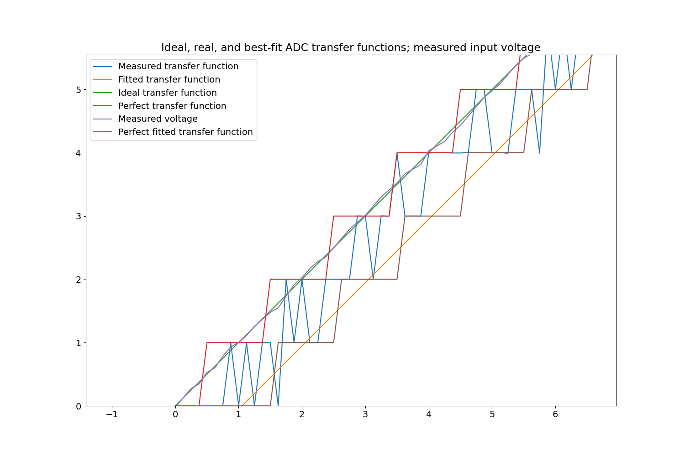
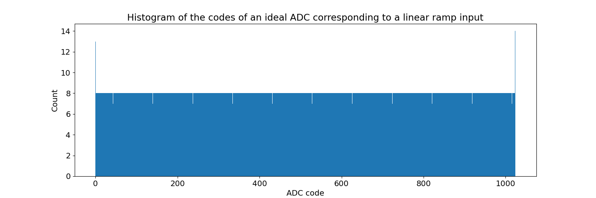
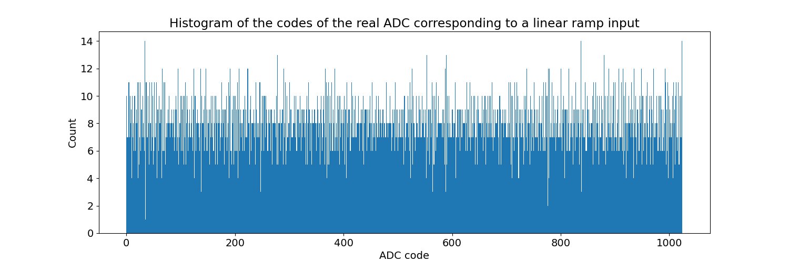
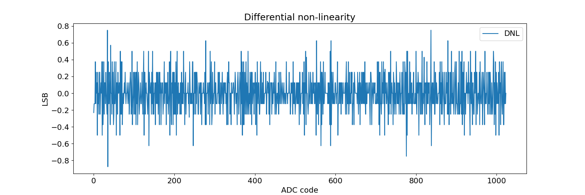
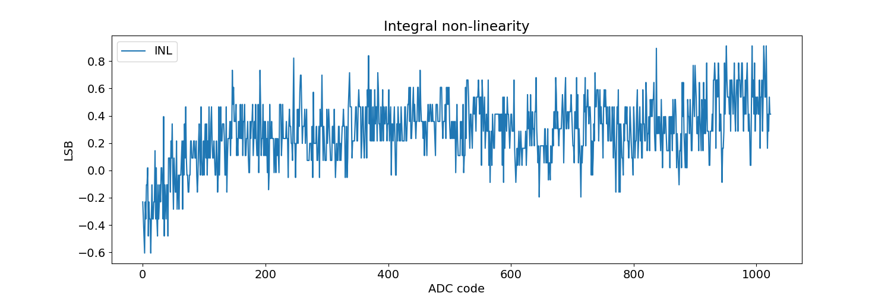
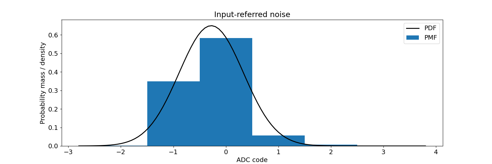
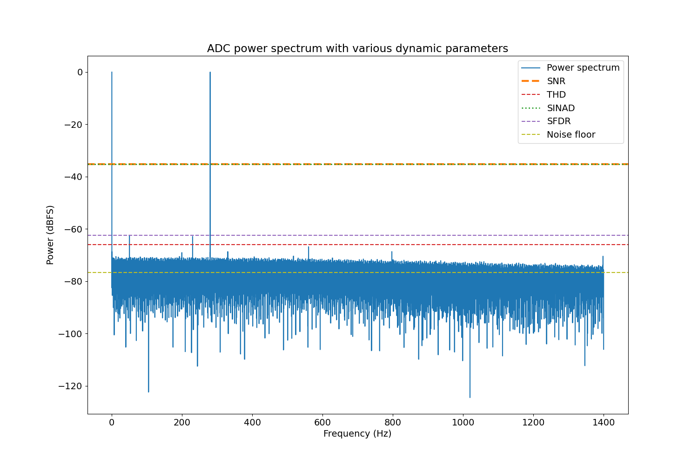

ADC test results
Static analysis:
Test parameters:
| Absolute accuracy |
1.935 (LSB) |
| Offset error |
1.053 (LSB) |
| Gain error |
1.246 (LSB) |
| Differential non-linearity |
-0.875 (LSB) |
| Integral non-linearity |
0.912 (LSB) |





Input-referred noise:

Dynamic analysis:
| Signal-to-noise ratio (measured) |
35.187 (dB) |
| Signal-to-noise ratio (theoretical) |
61.96 (dB) |
| Total harmonic distortion |
65.91 (dB) |
| Spurious-free dynamic range |
62.355 (dB) |
| Signal-to-noise ratio and distortion |
35.183 (dB) |
| Effective number of bits |
5.552 |
| Noise floor |
76.647 (dB) |
